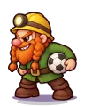

Wiki › Lugares › 🎯 Minas de Cristal
🎯 Minas de Cristal
🌀 Estádio do Multiverso Área de caça Nível dos adversários: 405–412
Como chegar
🧭 Viagem: 🌀 No Rio de Janeiro, fale com o Guardião do Multiverso.
🧭 Caminho: de lá: 🌀 Estádio do Multiverso → ⛏️ Reino de Pedraforte → 🎯 Minas de Cristal
Adversários aqui (2)
| Nome | Nível | XP | O que deixa cair | |
|---|---|---|---|---|
 | Anão Bate-Bola ×7 | 405 | 173.211 | |
| Cogumelo Saltitante ×3 | 412 | 134.437 |
Personagens aqui
Saídas para
Placas
🎯 MINAS DE CRISTAL